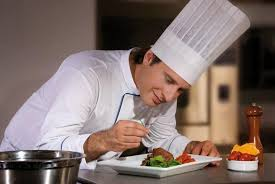
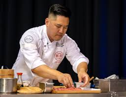
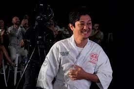
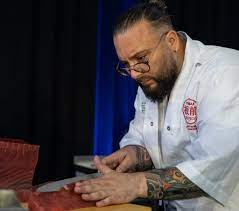
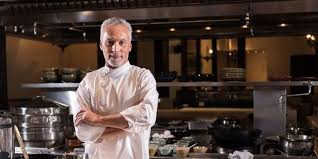

Mahallo
Donde cada bocado es una experiencia
Donde cada bocado es una experiencia
Los talentosos chefs que dan vida a nuestra cocina con creatividad y pasión

Chef Ejecutivo
Con más de 20 años de experiencia en cocinas de Europa y América, el Chef Alejandro trae técnicas innovadoras y un enfoque en sabores auténticos.
Cocina fusión mediterránea-asiática
Pastelera Ejecutiva
Formada en las mejores pastelerías de París, la Chef Sofía crea postres que son verdaderas obras de arte, equilibrando dulzura y texturas.
Postres modernos con toques clásicos

Sous Chef
Especialista en carnes y pescados, el Chef Carlos domina las técnicas de cocción perfecta y maridaje de sabores.
Cortes premium y mariscos

Sous Chef
Chef con múltiples estrellas Michelin, famoso por sus programas como Hell’s Kitchen y MasterChef. Su cocina se basa en la gastronomía británica moderna y técnicas clásicas francesas.
Comida Francesa

Sous Chef
Chef del restaurante Osteria Francescana, considerado uno de los mejores del mundo. Reinventa platos tradicionales italianos con un enfoque artístico y vanguardista.
Inventor de platos tradicionales.
Sous Chef
Primera mujer en EE. UU. en recibir tres estrellas Michelin por su restaurante Atelier Crenn. Su cocina es poética, artística y de fuerte identidad francesa.
Experta en Cocinar con arte.

Sous Chef
Chef del restaurante DiverXO (3 estrellas Michelin). Conocido por su estilo transgresor, creativo y con fusiones de sabores internacionales.
Cortes premium y mariscos
Estamos siempre buscando talento apasionado por la gastronomía. Envíanos tu CV y cuéntanos por qué quieres ser parte de Sabor Elegante.
Contáctanos